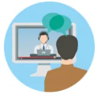
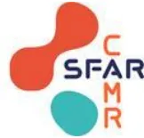
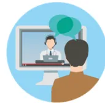

An icon depicting a person from behind, looking at a computer screen. On the screen, a doctor is visible, and there are speech bubbles above them, representing a video consultation.Nous vous proposons de réaliser à distance une téléconsultation. Il s'agit d'une mise en relation vidéo à un horaire fixé à l'avance avec un médecin anesthésiste réanimateur.
Pour cela, il vous faut être équipé d'un smartphone ou d'un ordinateur ayant une webcam et une fonction son / micro fonctionnelle ainsi qu'une connexion de débit correct.
La rencontre avec un médecin anesthésiste réanimateur est un moment important de votre prise en charge péri opératoire. C'est une obligation avant toute intervention pour garantir votre sécurité. Ce nouveau mode de communication vous permet ainsi d'éviter un déplacement.
Nous vous conseillons de préparer cette consultation selon le plan ci-dessous. Vous pouvez être assisté par la personne de votre choix dans ces démarches ainsi que le jour de la connexion pour la téléconsultation.

Vous êtes prêt !

Les données personnelles sont protégées et le secret médical assuré de la même façon que lors d'une consultation présente.
Le processus de facturation sera le même que lorsque vous vous déplacez en consultation.